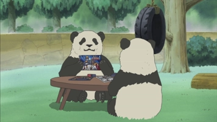
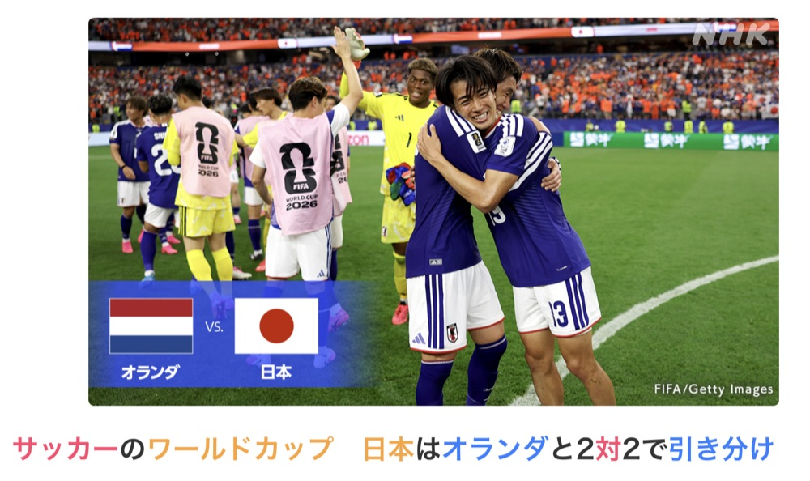
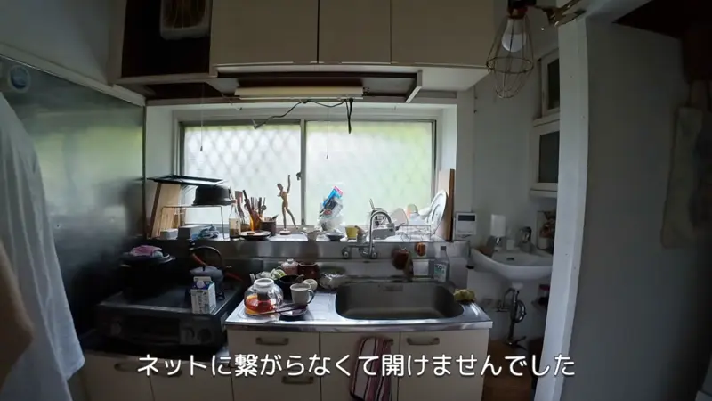
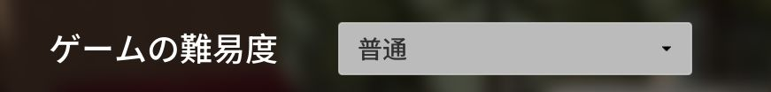

Verb (Past negative)
| Polite | 行きませんでした standard polite 行かなかったです everyday, softer |
|---|---|
| Casual | 行かなかった |
Same meaning: "didn't go". Only the politeness changes.

Shirokuma Cafe · Episode 12
常勤パンダさんが、モデラーなんて知らなかったよ。
"I didn't know Full-Time Panda built models."
なかった means didn't: the negative, in the past. Take the ない form and swap ない for なかった: 知らない → 知らなかった.
It answers "Did you know?": no, not until now. It works the same for every verb: 食べない → 食べなかった, しない → しなかった, 来ない → 来なかった.
Polite: swap ます for ませんでした: 知ります → 知りませんでした.

NHK News Web Easy · article
前半は、日本もオランダも点が取れませんでした。
"In the first half, neither Japan nor the Netherlands scored."
Polite: 取れます → 取れませんでした. 取れる = "can get", so literally "couldn't get a point".
Examples
A friend asks how the party was.
昨日、パーティーに行かなかった。
"I didn't go to the party yesterday."
行かない → 行かなかった.
CasualYour teacher asks for your homework.
すみません、宿題をしませんでした。
"Sorry, I didn't do my homework."
します → しませんでした.
PoliteA coworker offers you a snack.
今朝は何も食べませんでした。
"I didn't eat anything this morning."
何も + negative = nothing.
PoliteA friend asks if you saw their message.
ごめん、見なかった。
"Sorry, I didn't see it."
見ない → 見なかった.
CasualWith and without
パーティーに行かない。
"I'm not going to the party." Now or later.
パーティーに行かなかった。
"I didn't go to the party." It's over, and I wasn't there.
Sentence mining
YouTube · video
胃もたれしなかったです。
"My stomach didn't feel heavy."
なかった + です: polite, a bit softer than ませんでした.
YouTube · video
そういう、簡単なフレーズさえ話せませんでした。
"I couldn't even say simple phrases like that."
話せる (can speak) → 話せませんでした.

YouTube · video
ネットに繋がらなくて、開けませんでした。
"It wasn't online, so I couldn't open it."
開けます → 開けませんでした.
Source unknown No source
階段の上には、誰もいませんでした。
"There was nobody at the top of the stairs."
いる → いませんでした. 誰も + negative = nobody.
Source unknown No source
あれ？ウケなかった？
"Huh? That didn't get a laugh?"
ウケる (to get a laugh) → ウケなかった.

Source unknown No source
昨夜は、悪夢を見てよく眠れなかった。
"I had a nightmare last night and couldn't sleep well."
眠れる (can sleep) → 眠れなかった.
Core deck Core
なぜ来なかったの。
"Why didn't you come?"
来る → 来ない (こない) → 来なかった.
Core deck Core
雨降りで月が見えなかったね。
"We couldn't see the moon because of the rain."
見える (to be visible) → 見えなかった.